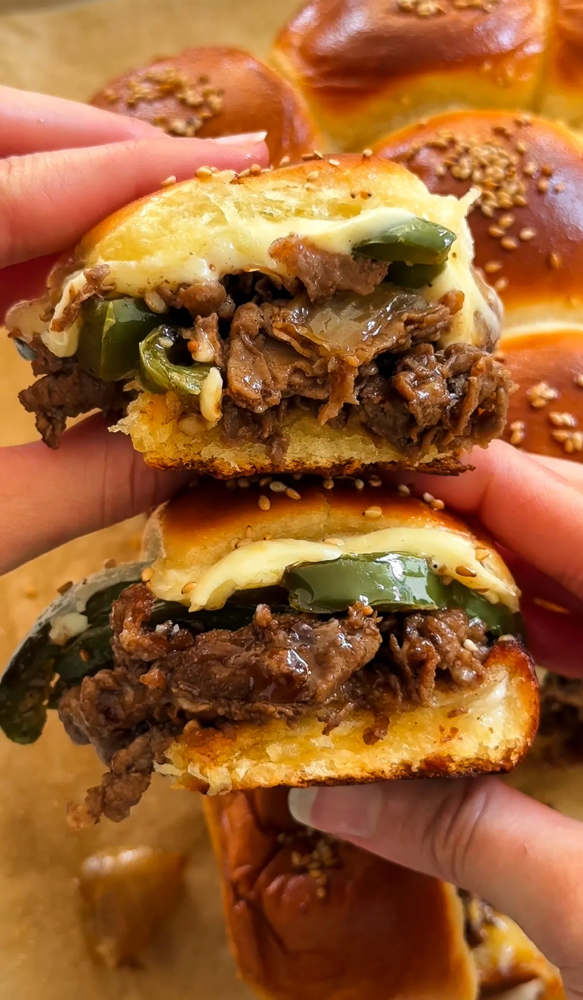
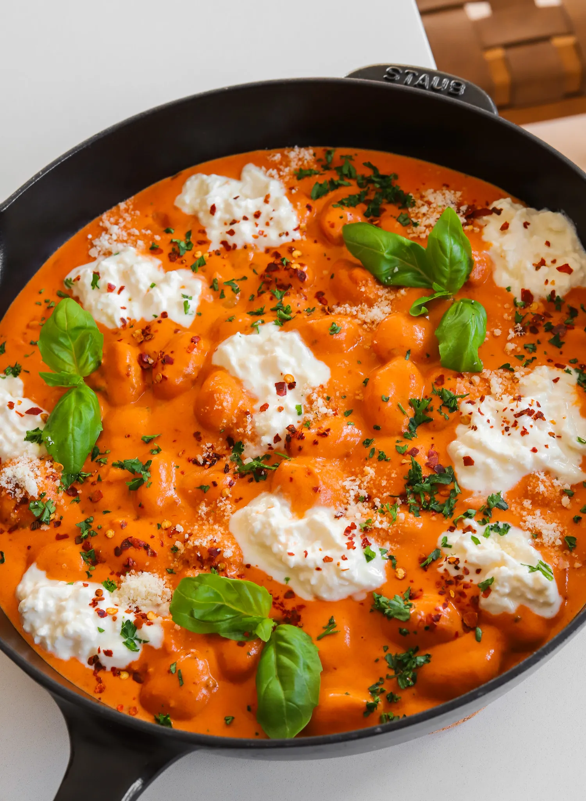

Appetizer/ Snacks
Philly Cheesesteak Sliders
PREP TIME: 15 MINUTES COOK TIME: 25 MINUTES
TOTAL TIME: 40 MINUTES
YIELDS: 12 SLIDERS
If you’re looking for a game-day treat that’ll leave everyone
talking, these cheesesteak sliders are the way to go. Packed with
tender steak, caramelized onions, melty cheese, and all the right
seasonings, they’re perfect for your Super Bowl spread. Let me walk
you through every step so you can serve up sliders that will steal
the show and leave none to go!
INGREDIENTS
Steak
- 1 pound thinly shaved steak
- 1 tablespoon unsalted butter
- 1 tablespoon neutral oil
- 1/2 to 3/4 teaspoon salt
- 1 teaspoon paprika
- 1/2 teaspoon mustard powder
- 1/4 teaspoon black pepper
- 1 tablespoon Worcestershire sauce
- 1/4 cup beef broth
Veggies
- 1/2 large yellow onion, diced
- 1 green bell pepper, thinly sliced
- 1 tablespoon neutral oil
- salt, to taste
- black pepper, to taste
- 1/2 tablespoon minced garlic
For Assembly
- 12-pack Hawaiian rolls
- mayonnaise, for toasting bread (optional)
-
4 to 6 slices cheese (Cooper Sharp, provolone, or cheese wiz)
- melted unsalted butter, for brushing tops
- toasted sesame seeds
INSTRUCTIONS
-
Cook the Veggies:
In a pan over medium heat, add neutral oil.
Once hot, toss in the diced onion and sliced bell pepper. Season
with a pinch of salt and black pepper. Sauté until softened and
slightly caramelized, about 5 to 7 minutes. Stir in the minced
garlic and cook for 1 to 2 minutes until fragrant. Remove
from the pan and set aside.
-
Cook the Steak:
In the same pan, melt butter with neutral oil over medium-high
heat. Add the shaved steak, breaking it apart as it cooks.
Season with salt, paprika, mustard powder, and black pepper.
Once the steak is browned, pour in Worcestershire sauce and
cook for another minute. Then, pour in the beef broth to
deglaze the pan, scraping up any browned bits for extra flavor.
Let it simmer for 2 minutes until slightly reduced. Remove from
heat.
-
Prepare the rolls:
Preheat the oven to 350°F (175°C). Keeping the Hawaiian rolls
connected, slice them in half horizontally. Spread a thin layer
of mayonnaise on the cut sides. Place them mayo-side up on a
baking sheet and toast in the oven for a few minutes until
lightly golden.
-
Assemble the sliders:
Place the bottom half of the toasted rolls in a baking dish or
tray. Evenly spread the cooked steak over the bread, then layer
the sautéed veggies on top. Add your choice of Cooper Sharp,
provolone, or Cheese Whiz over the veggies. Place the top half
of the rolls on.
-
Finish and Bake:
Brush the tops with melted butter and sprinkle with toasted
sesame seeds. Cover loosely with foil and bake for 10 to 15
minutes until the cheese is melted. Then, remove the foil and
bake for another 5 minutes until the tops are golden brown.
-
Serve
Let the sliders cool slightly before pulling them apart.
Enjoy warm!

Drinks
Tiramisu Latte
PREP TIME: 10 MINUTES TOTAL TIME: 10 MINUTES
YIELDS: 2
If you love tiramisu, this latte will easily become your fave way to
caffeinate! Sweet espresso, creamy milk, and a velvety mascarpone
foam come together for a sip that’s pure indulgence. Whether hot or
iced, it’s like treating yourself to dessert—but in drinkable form!
INGREDIENTS
For the espresso
- 4 shots espresso
- 2 to 4 tablespoons brown sugar or chocolate mocha sauce
Sweet Foam
- 1/2 cup heavy cream
- 1/4 cup mascarpone cheese
- 2 tablespoons simple syrup
- 1 teaspoon vanilla extract
For the Latte:
- 1 to 2 cups milk (whole milk or preferred milk)
- ice (for iced version)
- cocoa powder or chocolate shavings (optional, for garnish)
- lady fingers, optional
INSTRUCTIONS
Prepare the espresso
-
Brew 4 shots of espresso, 2 per drink. For a stronger drink,
brew 3 shots of espresso per drink.
-
While still hot, stir in brown sugar or mocha sauce to your
desired sweetness until fully dissolved. Set aside.
Make tiramisu foam:
-
In a mixing bowl or using a handheld frother, combine 1/4 c
up heavy cream, 2 tablespoons mascarpone cheese, 1 tablespoon
simple syrup, and 1/2 teaspoon vanilla extract.
-
Whip until the mixture thickens slightly, forming a soft,
pourable foam.
Hot Latte
-
Heat 1 cup of milk until steaming, but do not let it boil.
Froth if desired.
- Pour the sweetened espresso into a mug.
-
Add the steamed milk, filling the mug almost to the top.
- Spoon the sweet foam generously over the top.
-
Sprinkle with cocoa powder or chocolate shavings if desired.
Iced Latte
- Fill a glass with ice.
-
Pour 1 cup of cold milk over the ice, leaving room for the
espresso.
-
Slowly pour the sweetened espresso over the milk to create a
layered effect.
- Top with the sweet foam, letting it cascade over the ice.
-
Finish with a dusting of cocoa powder or chocolate shavings
if desired.

Dinner/ Main Course
Spicy Vodka Gnocchi
PREP TIME: 5 MINUTES COOK TIME: 25 MINUTES
TOTAL TIME: 30 MINUTES
YIELDS: 3 TO 4
This "Marry Me" spicy vodka gnocchi is so delicious, it might
just seal the deal! Each pillowy bite of gnocchi is coated in a
rich, spicy sauce with a touch of creaminess from burrata, making
it hard not to fall in love. With its bold flavors and irresistible
texture, this dish is sure to impress every time!
INGREDIENTS
- 1 pound gnocchi
- 1/4 cup extra virgin olive oil
- 1 tablespoon fresh garlic, finely minced
- 2/3 cup tomato paste
- 1 1/3 cup heavy cream
- 1 to 2 teaspoons red pepper flakes, or to taste
- 2 teaspoons dried basil
- salt and pepper, to taste
- 1/2 cup freshly grated parmesan, more to taste
- 2 tablespoons unsalted butter
- 1/4 cup burrata filling
- fresh basil leaves
INSTRUCTIONS
-
Bring a large pot of salted water to a boil. Cook the gnocchi
according to the package instructions, then drain and set aside.
-
In a large skillet over medium heat, warm the olive oil. Add the
minced garlic, stirring until it becomes fragrant and just
golden.
-
Add the tomato paste to the skillet and cook, stirring
frequently, until it deepens in color, about 2-3 minutes.
-
Lower the heat slightly, then pour in the heavy cream, red
pepper flakes, and dried basil. Season with salt and pepper to
taste. Stir everything together and let the sauce simmer until
it thickens, allowing the flavors to meld.
-
Add the parmesan cheese and butter, stirring until the cheese
melts and the sauce becomes smooth and creamy.
-
Gently fold in the cooked gnocchi, making sure each piece is
coated in the sauce.
-
Add dollops of burrata filling on top for extra creaminess,
then garnish with fresh basil leaves before serving. Enjoy!